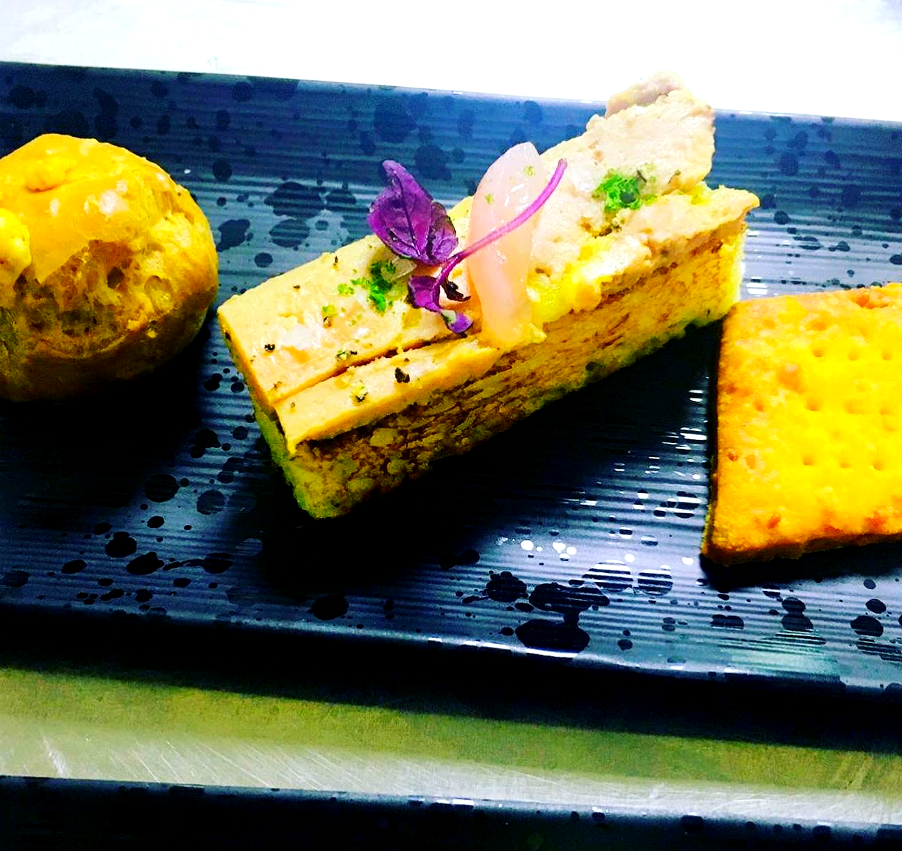
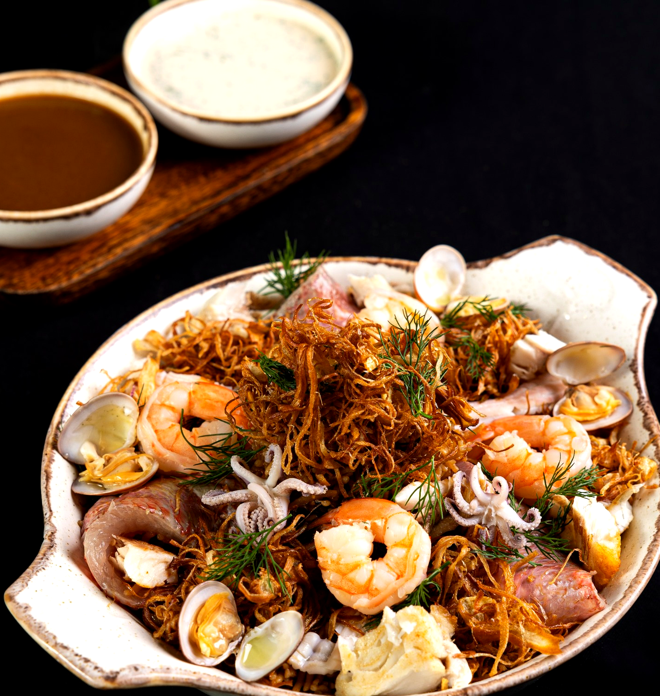
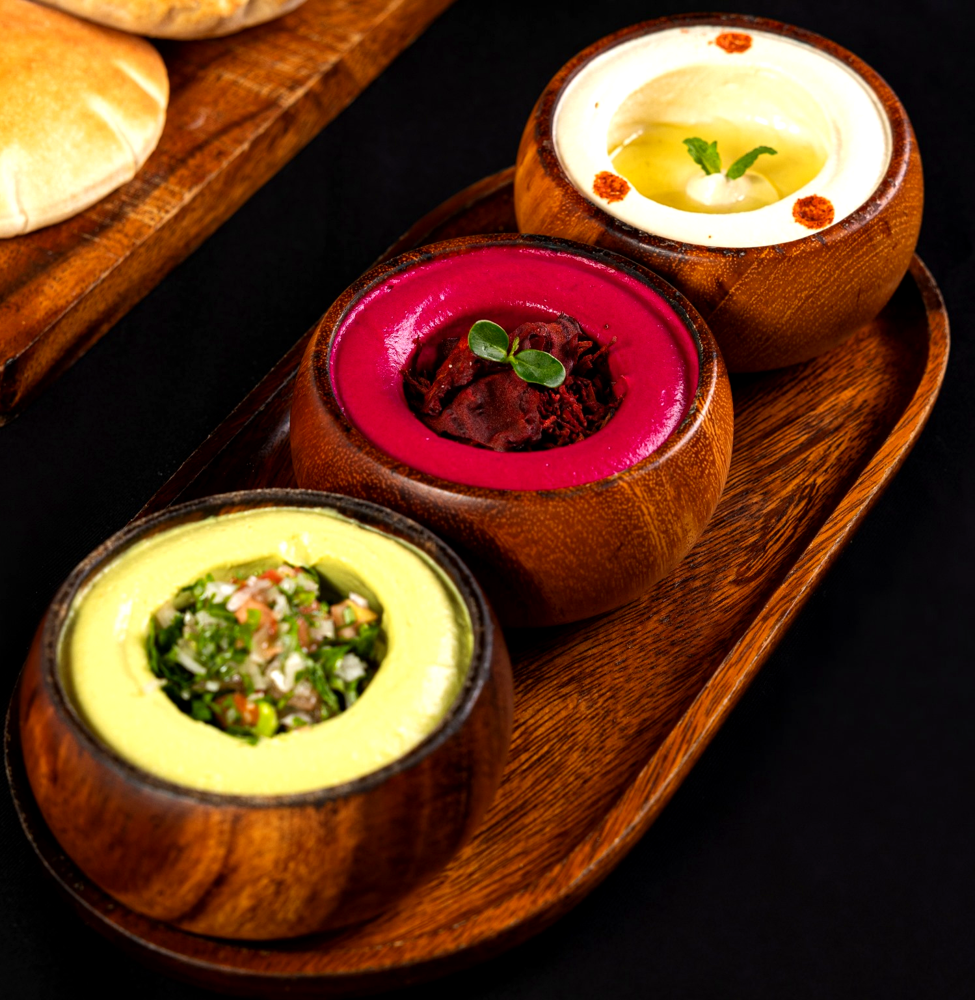
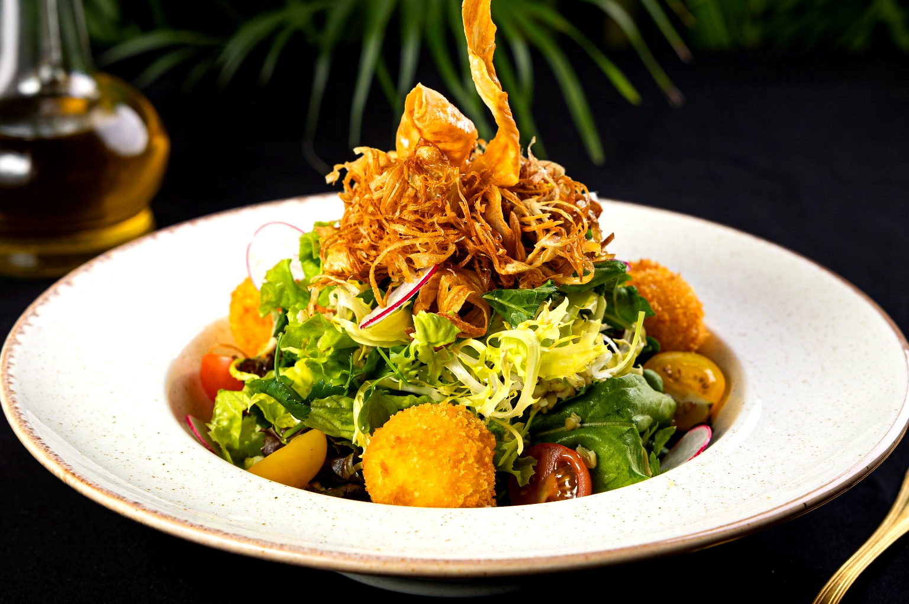
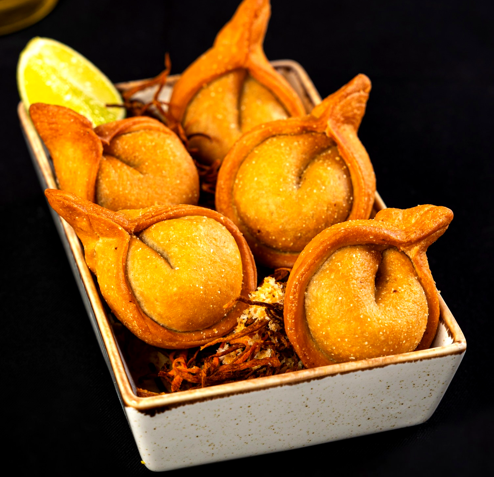
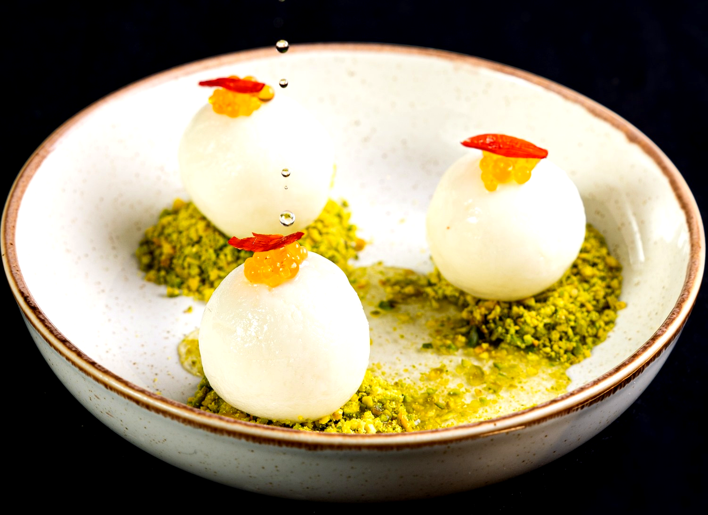
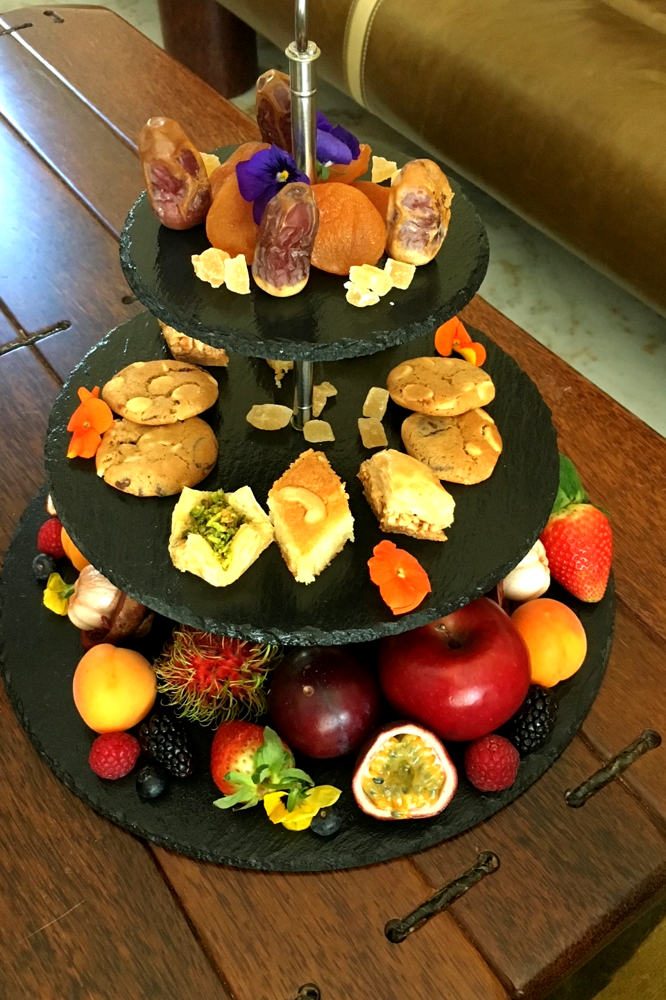
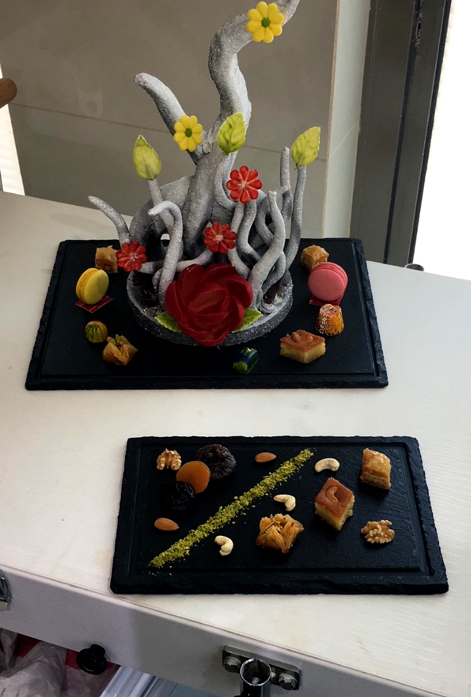
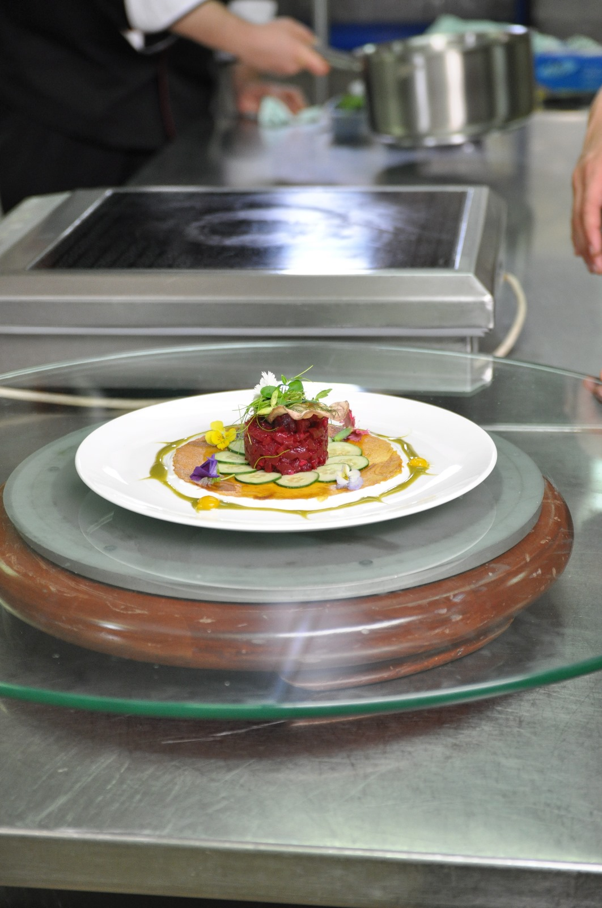

Selected Work
A visual body of work shaped by refinement, precision, and hospitality discipline
This portfolio presents a focused selection of Michel Karam's culinary work across signature dishes, seafood, meat, starters, desserts, banquet presentation, buffet styling, and live service execution.
Each category reflects a balance of visual elegance, technical structure, and operational control developed through 25 years of experience in professional kitchen environments.
Signature Dishes
Signature Dishes
Composed plates that reflect Michel Karam's visual language, ingredient sensitivity, and disciplined approach to contemporary presentation.




Seafood
Seafood
Seafood work ranging from refined plated compositions to premium hospitality displays, with emphasis on freshness, clarity, and controlled presentation.



Meat
Meat
Meat presentations defined by depth, balance, and disciplined execution across modern hospitality service and refined plated work.


Starters
Starters
Starters and light dishes built around freshness, texture, precision, and a refined first impression.






Desserts
Desserts
Modern pastry work and plated desserts that combine precision, restraint, texture, and visual elegance.



Banquets & Buffets
Banquets & Buffets
Large-format presentation, buffet styling, and banquet execution designed to balance scale, consistency, and visual impact within premium hospitality settings.






Live Stations
Live Stations
Live culinary execution where technique, interaction, energy, and service control become part of the guest experience itself.


